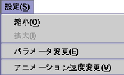
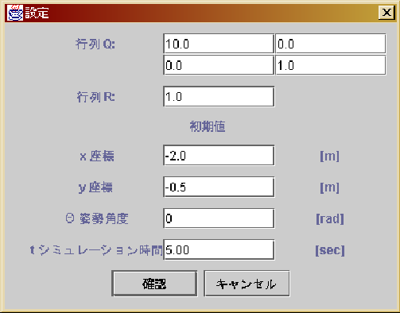
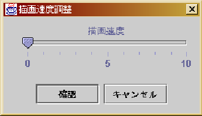

: 描画メニュー
: プルダウンメニューの機能
: プログラムメニュー
設定メニューではFig.A.8に示すように，次のような機能を持っ
ている．
- 縮小
- これを選択すると，アニメーションパネルの座標間隔が小さくなり，
一回選択する毎にアニメーション画面が半分に縮小される．最小
の画面の制限はない．
- 拡大
- これを選択すると，アニメーションパネルの座標間隔が大きくなり，一
回選択する毎にアニメーション画面が2倍に拡大される．
最大のサイズには制限があり，最大の画面はプログラムが起動された時
の画面のサイズである．
- パラメータ変更
- これを選択すると，Fig.A.9に示すような新しいウィ
ンドウが開き，数値シミュレーションを行う際の各パラメータを変
更することができる．変更できるパラメータとしては，初期値，シ
ミュレーション時間，および LQ 最適制御の時には行列
 と
と の
パラメータ，極配置の時には極のパラメータを変更できる．
の
パラメータ，極配置の時には極のパラメータを変更できる．
- アニメーション速度変更
- これを選択すると，Fig.A.10に示すような新しいウィ
ンドウが開き，アニメーションの速度やスナップショットの間隔を
調整することができる．アニメーションの時に値を大きくすると，
アニメーションが早く動くことになる．スナップショットの時に値
を大きくすると，スナップショットの時間間隔が大きくなる．
Fig. A.8:
設定メニュー
 |
Fig. A.9:
パラメータ変更ウィンドウ
 |
Fig. A.10:
アニメーション速度変更ウィンドウ
 |
Shigeki Nakaura
平成15年3月17日